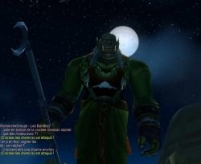

Joué par :
Elkatnep Joué par :
[ Information masquée ] Age : 143
Lieu de naisance : Inconnue
Signe de naissance : Inconnu
Sexe : Homme
Race : Orc
Faction : Horde
Formation : Chaman
Niveau : 60
Guilde : Ordre de Titania (l') Artisanat 1 : Couturier
Artisanat 2 : Enchanteur
Ère du Renouveau [1]
Lune de la Force [1]
Décade du Panda [1]
La Quète du Pentacle: Le livre blanc (Prologue)
Prologue: Le tailleur d'Orgrimmar.
Les jours passent et ne changent pas. La même monotonie envahie chacune de mes pensées à tel point que je n'ai presque plus conscience du jour et de l'heure. Chaque instant passé est perdu à jamais et la vie ne fait que passer inéxorablement.
Ce matin encore, je me lève aux aurores pour préparer ma journée à l'échoppe qui sera encore une fois longue et fastidieuse. Comme un rituel séculaire, je commence ma journée par une brève toilette où je coupe soigneusement chaque poil hirsute de ma barbe blanche. Je remarque aujourd'hui que ma coiffe mériterait que j'y porte attention: je décide alors de passer le lendemain chez maître Iurnh, le coiffeur d'Orgrimmar.
Orgrimmar! Cité des Orcs contemplant ses quelques années d'existence. La cité a connue une expansion énorme depuis qu'elle a été fondée je n'avais alors que 79 ans à moins que cela n'était 81?... Rahhh... Satané mémoire fillant comme les années...
Ce matin, les orcs s'affairent afin de préparer l'anniversaire de la fondation de la ville et les rues fourmillent déjà de monde.
Mon seul réel plaisir dans cette vie réside dans ma promenade matinale entre mon domicile et mon échoppe située prêt de la Vallée de l'Honneur. C'est pour moi l'occasion de me distraire en voyant les jeunes orcs s'afférer à leurs occupations et à préparer leurs prochaines beuveries dans la taverne d'Orgrimmar. Les occasions de fêtes comme celle-ci sont pour moi une délectation car il m'est donné de rencontrer beaucoup de monde et de discuter sur autre chose que les dernières tendances vestimentaires ou la qualité des différents tissus et autres soies...
L'héritage de ma famille! J'arrive devant cette échoppe qui appartenait autrefois à mes défunts parents. Ma famille est dans la mode vestimentaire depuis des générations et mes aieux étaient reconnus par nos frères orcs et plus particulièrement nos aristocrates comme pionniers dans les différentes modes.
Mais c'était bien avant que nous n'arrivions à Orgrimmar... Depuis que la guerre et les batailles font rage sur nos terres, les seuls clients qui passe le péron de mon échoppe sont à la recherche d'armures ou de sacs et non plus de mes splendides robes ou chemises qui faisaient jadis la fierté de notre famille.
"25...26...27..."
Je prends place derrière mon comptoir et comme chaque matin, je réalise la recette de la veille. Hier a été une journée morne, je n'ai vendu que quelques sacs de laines et pris commande d'une seule robe de mariée.
"47...48... et 49 Pièces d'Argent."
Juste de quoi payer mes courses alimentaires aujourd'hui. Il faut espérer que la journée sera plus rentable car sinon, je ne pourrais pas payer mon tribu aux instances financières d'Orgrimmar qui viennent chaque année nous imposer de leurs différentes taxes trop élevées afin de financer les investissements dans l'armée. Les guerres font des victimes sur les champs de batailles mais elles font mourir les civils à petit feu derrière les lignes.
"Trop vieux pour le combat!" m'avait-on dit lorsque je me décidais il y a quelques années de cela à m'engager dans notre armée. 143 ans est certes un age avancé mais je tiens encore sur mes deux jambes et je suis sur d'être encore capable de trancher deux ou trois têtes sous cette pression intense des champs ravagés par les combats.
"143 ans!" me dis-je. Je réalises alors que c'est aujourd'hui mon anniversaire. Une année de plus à ne rien faire. Ces anniversaires sont pour moi un calvaire. Depuis que mes parents ne sont plus, je n'ai plus réussi à faire de rencontres amicales et je les passe désespérément seul. Non pas que je ne le veuille mais je n'ai pas les mêmes considérations que mes contemporains, peut être suis-je trop nostalgique du temps jadis où nous étions riches et célèbres...
Soudain la clochette de la porte retentit signalant qu'un visiteur est entré. Je soulève les yeux de ma bourse et mes parchemins comptables pour découvrir un jeune orc richement vétu d'une robe confectionnée avec soin. Je découvre devant mes yeux ébahis une création splendide où des perles et des ornements d'émeraudes viennent ponctuer judicieusement ça et là une robe taillée dans le plus beau tissu qu'il m'ait été donné de voir. Cela n'est pas de la soie et encore moins un de ces fameux tissus de mage que l'on trouve difficilement.
"Lok'Tar, Orc! Vous êtes bien Elkatnep, couturier de son état?" me dit le jeune orc sur un ton hautain.
"Lok'Tar! Oui Messire, en quoi puis-je vous être utile?" rétorquais-je humblement.
"Je suis Ayorhn, Prêtre de la maison Ilure et je viens dans votre échoppe afin de vous faire commande." continua-t-il sans porter attention à ma personne et dévisageant mon échoppe avec mépris.
Je jubilais intérieurement! Un être aussi richement vétu devait vouloir que je lui confectionne une robe sans nulle pareil... J'étais dans un tel état d'excitation que mon sang bouillait en moi et ma vue se troublait légèrement.
"Dites m'en plus?" dis-je assez promptement, "Avez vous vu une robe qui vous plaise dans ce que je possède? De quelle matière voulez-vous que je la confectionne, soie, tissu de mage? Souhaitez vous que j'y apporte quelques pierres précieuses comme sur cette magnifique robe que vous portez?"
Les mots sortaient plus vite de ma bouche que je ne pouvais les réfléchir. J'étais vraiment impatient qu'il me réponde mais je ne lui en laissait pas le temps. Ma vue se troublait d'avantage et je commençais à cligner rapidement des yeux.
"Rien de tout cela, orc..." me rétorqua-t-il, "... Vous trouverez devant votre... heu... magasin, un carosse sur lequel se trouvent mes bagages. Je souhaiterai que vous me reprisiez mes sacs avant que je ne parte en voyage."
Mes bras semblaient alors peser une tonne. Je passais abruptement de la jubilation à la déception la plus totale. Le choc de cette commande me mît dans un état proche de la léthargie pendant de longues secondes, ne sachant que dire... Mon corps tout entier semblait vouloir s'enfoncer dans le sol sous le poids de cette frustration. Ma tête me tournait.
Passé la surprise, je tentais de faire sortir quelques mots de ma bouche mais mes efforts étaient vains, seuls quelques sons incompréhensibles voulaient bien résonner dans la pièce.
Je réalisais alors que ma vue se troublant et cette sensation de lourdeur n'était en aucun rapport avec ce qu'il venait de m'arriver. J'étais pris d'un malaise qui débuta dés mon sortir du lit mais qui grandit jusqu'à maintenant.
Je ne distingue plus que silhouettes et lucioles blanche tournant devant moi... Je vascille et sent mon corps tombé lourdement au sol... Une grande douleur résonne dans ma tête lors de sa rencontre avec le sol... J'entends au loin la voix de ce prêtre qui semble m'appeler... D'autres voix semblent également surgir de nulle part, des voix plus graves... Je ne sens plus mon corps et un voile de lumière a complètement envahi mes yeux...